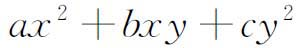

1．19世纪历史背景
正如在20世纪中发展起来的许多其他数学分支一样，抽象代数的基本概念和目标在19世纪就已经确定下来了。19世纪有成打的发明创造表明了这样一个事实：代数能够处理不一定是实数或复数的对象所组成的集合。向量、四元数、矩阵、二次型如

、各种形式的超复数、变换、替换或置换等，都是这种对象的例子，这些对象在各自集合所特有的运算和运算规律下联系起来。代数数方面的工作虽然处理的是某些类型的复数，却使各种代数涌现出来，因为它证实了只有某些性质能适用于这些类型的复数而不适用于整个复数体系。这些不同类型的对象，是按照它们的运算特性互相区别的；我们已经看到，群、环、理想和域这样一些概念，以及子群、不变子群和扩域这样一些从属的概念，它们的引进是为了识别各种集合。可是，19世纪关于各种代数的著作，几乎全是讨论上述的具体体系的。仅在19世纪的最后10年，数学家才认识到，对许多不相联系的代数抽出它们共同的内容来进行综合的研究，可以提高效率到一个新的水平。例如，置换群，高斯研究过的二次型组成的群，加法的超复数系，以及变换群，通过如下的说法，它们就可以在统一的形式下进行探讨：即它们都是由一些元素或对象组成的集合，服从一种运算，而这种运算的特性仅仅由某些抽象性质来规定，其中最主要的一条是，运算作用在该集合的任两元素上就产生这集合的第三个元素。用这种观点去处理构成环和域的各种集合，可以获得同样的便利。这种对抽象集合行之有效的想法，虽然是走在帕施、皮亚诺、希尔伯特的公理体系之前，但是后者的发展无疑地加速了人们对代数抽象方法的承认。
因而，抽象代数产生于对所有各种类型的代数作有意识的研究之时。这些代数，就其个体讲，不仅是具体的，而且是为特殊领域服务的。例如，置换群在方程论中就是这样。通过抽象而获得可用于许多特殊领域的结果，这种好处很快就被忽视了，而抽象结构的研究和它们性质的推导却变成了它本身的目的。
抽象代数曾经是20世纪人们喜爱的领域之一，而到今天范围广阔。我们只讲这个课题的起源，并且指出继续深入研究几乎具有无限的机会。讨论这个领域里已有的成就，遇到的最大困难就是专门名词。不同的作者引用不同的名词，而且一个名词从一个时期到另一个时期会改变其含义，除去这些通常的困难以外，抽象代数的特征和缺陷是引进成百个新名词。概念上的每一个很小的变化，却是用一个新的而且常常是堂皇响亮的名词来显示区别的。把用过的名词编成一部完全的字典将成一大本书。